NEWS & STORIES
ニュース
研究の成果と、日々の活動の記録。
HOME / ニュース最近のニュース
研究・活動
4年生11名が卒業。坂本さんが総代として学長賞を受賞。
↗メディアAIエージェントとの「対話」を通じ、人とシステムが共生する社会をデザインする。
↗メディアAIと人は、どこまで信頼し合えるのか。片上大輔のインタビューが公開。
↗受賞李基響さんがICEIC2026・WEIE WorkshopでBest Presentation Awardを受賞。
↗受賞ニューロダイバーシティアワード受賞のプレスリリースが公開。
↗研究・活動坂本朗生さんの論文がFSS2025のショートノート特集論文に採録。
↗研究・活動李基響さんが国際会議TAAI2025で口頭発表。
↗研究・活動宇野愛華さんが国際会議HAI2025でポスター発表。
↗受賞坂本朗生さんがFSS2025の優秀発表賞を受賞。
↗受賞認知症家族介護者のための取り組みがニューロダイバーシティアワード2025を受賞。
↗これまでのニュース
最新ニュース
- （2026.3.25） 4年生11名の学生が卒業しました。B4の坂本君が、学部の総代として学長賞を受賞しました。卒業された皆様、おめでとうございます。
- （2026.03.06）「AIエージェントとの「対話」を通じ 人とシステムが共生する社会をデザインする」というタイトルのインタビュー記事が公開されました。インタビューはニューロダイバーシティプロジェクトのインタビュー記事として掲載されたものです。 以下のYouTubeにてインタビューの様子を見ることもできます。 VIDEO / YOUTUBEAIエージェントとの対話と、人間共生の未来YouTubeで動画を見る ↗
- （2026.03.03）「AIと人は、どこまで信頼し合えるのか――高齢化社会で問われるロボットとの新しい関係性」というタイトルのインタビュー記事が公開されました。インタビューはLC Asset Design合同会社のインタビュー記事として掲載されたものです。
-
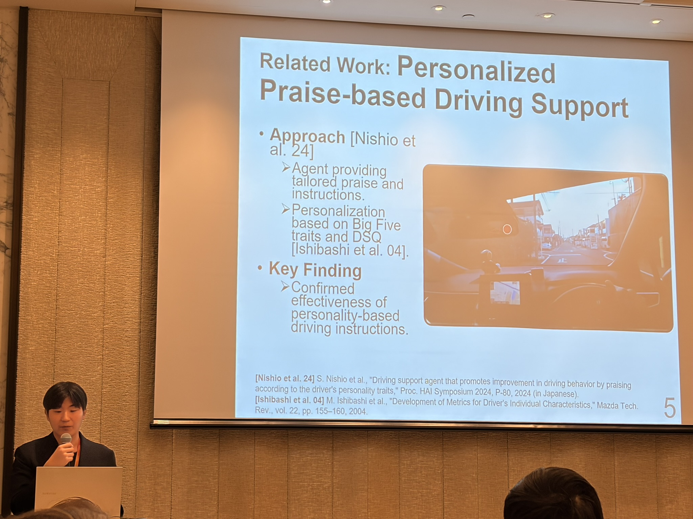
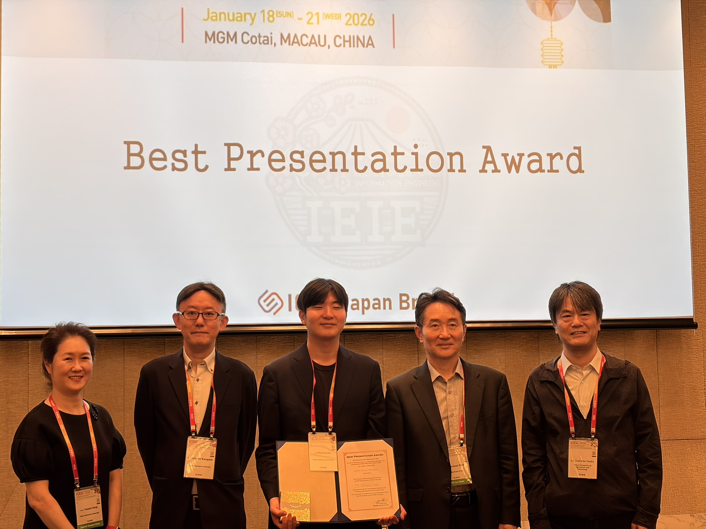
（2026.1.20）1月18日（日）～1月21日（水）に中国・マカオで行なわれた国際会議The 25th International Conference on Electronics, Information, and Communication（ICEIC2026）においてM1の李基響君が口頭発表を行ない、WEIE WorkshopのBest Presentation Awardを受賞しました。
- G. Lee, T. Miyamoto, D. Katagami: Development of a Multimodal Driving Support System for Building a Sustained Relationship with the Driver, The 25th International Conference on Electronics, Information, and Communication（ICEIC2026）, (2026.1)
- （2025.12.19）ニューロダイバーシティアワード受賞のプレスリリースがでました。
- （2025.12.13）12月13日（土）～12月14日（日）に台湾のNational Taiwan Normal Universityで行なわれた国際会議The 30th International Conference on Technologies and Applications of Artificial Intelligence (TAAI2025)においてM1の李基響君が口頭発表を行ないました。
- G. Lee, T. Miyamoto, D. Katagami: Development of a Conversational Agent System for Building Sustained Relationships Based on the Close Relationship Process, The 30th International Conference on Technologies and Applications of Artificial Intelligence(TAAI2025), 1-4, No. 146, (2025.12)
- （2025.11.12）11月10日（月）～11月13日（木）に慶應大学日吉キャンパスで行なわれた国際会議Human-Agent Interaction（HAI2025）においてB4の宇野愛華さんがポスター発表を行ないました。
- M. Uno, T. Miyamoto, D. Katagami: Development of a Dementia Care Training System that Learns with Dementia Patient Agents based on LLM-Embedded Cognitive Architecture, 13th International Conference on Human-Agent Interaction (HAI2025) (2025.11)
- （2025.12.15）B4坂本朗生君の論文がFSS2025のショートノート特集論文に採録されました。
- 坂本朗生、宮本友樹、片上大輔：ピアラーニングを用いてユーザのプレイレベルに応じたライバル感を演出する対話型ゲーム支援エージェントの開発（2026）(in Press)
 （2025.11.11）9月3-5日にくまもと県民交流館パレアで行なわれたファジィシステムシンポジウム（FSS2025）において発表した、B4坂本朗生君の発表がFSS優秀発表賞を受賞しました。
（2025.11.11）9月3-5日にくまもと県民交流館パレアで行なわれたファジィシステムシンポジウム（FSS2025）において発表した、B4坂本朗生君の発表がFSS優秀発表賞を受賞しました。- 坂本朗生：ピアラーニングを用いてユーザのプレイレベルに応じたライバル感を演出する対話型ゲーム支援エージェントの開発、ファジィシステムシンポジウム（FSS2025）、2A2-2（2025.9）
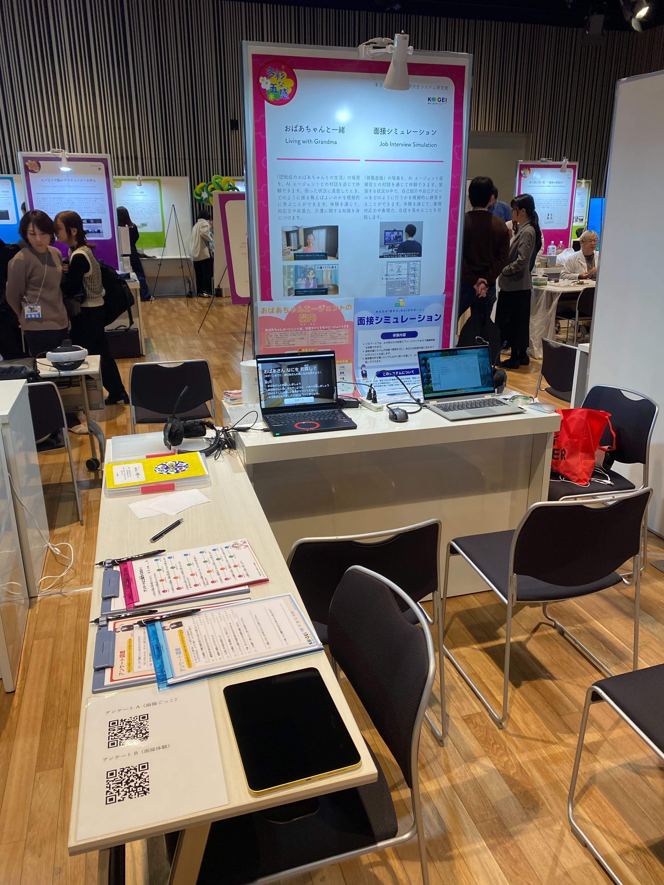
（2025.11.03）東京ポートシティ竹芝で11/2（日）、3（月・祝）で開催されたニューロダイバーシティプロジェクトのみんなの脳科学2025に出展しました。2日間で100人近い参加者に、認知症のおばあちゃんAIとの生活場面の体験や、AI面接官との面接を体験していただきました。その中で行なわれたニューロダイバーシティアワード2025にて、我々の研究室の認知症家族介護者のための取り組みがニューロダイバーシティアワードを受賞しました。審査の最終講評で、世界10か国170の中から6件の選出とのことで、上位3.5%に選ばれたことになります。 選ばれた6件のうち大学等アカデミックの団体は1件のみでした。我々の5年間の取り組みに対して高く評価していただきましてとても光栄に思います。運営の皆様、展示に参加してくださった皆様、研究室OB・OGの皆さん、そして今回のデモを手伝ってくれた研究室の5名のメンバーに感謝です。
選ばれた6件のうち大学等アカデミックの団体は1件のみでした。我々の5年間の取り組みに対して高く評価していただきましてとても光栄に思います。運営の皆様、展示に参加してくださった皆様、研究室OB・OGの皆さん、そして今回のデモを手伝ってくれた研究室の5名のメンバーに感謝です。
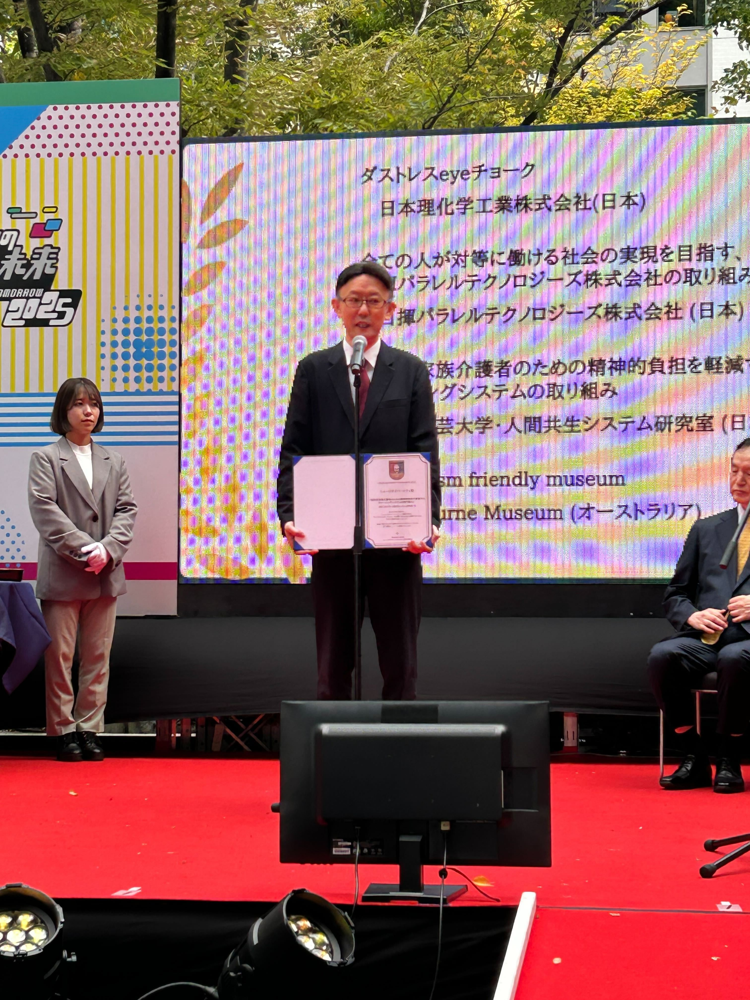
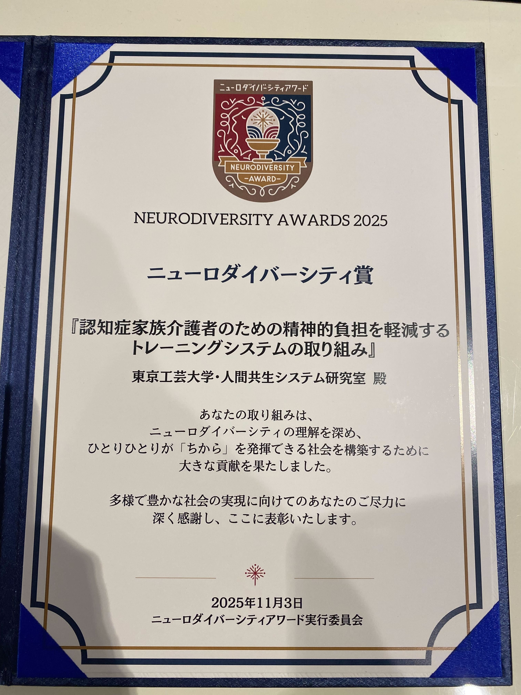
- （2025.10.06）National Pingtung Universityから林教授ご夫妻が客員研究員として3ヶ月滞在しております。初日に写真を撮っていただきました。教育支援システムの研究をされており、国際的な共同研究のコラボレーションを検討しています。よい滞在になるとよいなと思います。
- （2025.09.05）9月3-5日にくまもと県民交流館パレアで行なわれたファジィシステムシンポジウム（FSS2025）において、M1王俊杰君、B4坂本朗生君、B4髙野智椰君がそれぞれ口頭発表を行ないました。
- 坂本朗生, 宮本友樹, 片上大輔：ピアラーニングを用いてユーザのプレイレベルに応じたライバル感を演出する対話型ゲーム支援エージェントの開発、ファジィシステムシンポジウム（FSS2025）、2A2-2（2025.9）
- 髙野智椰, 宮本友樹, 片上大輔：深層学習麻雀AIの打牌選択への寄与度可視化による対話型牌譜検討支援システムの提案、ファジィシステムシンポジウム（FSS2025）、2A3-4（2025.9）
- 王俊杰, 宮本友樹, 片上大輔：文化摩擦シナリオに基づいたAI適応型日中言語・文化習得システムの提案、ファジィシステムシンポジウム（FSS2025）、3A2-3（2025.9）
- （2025.07.30）5月に大阪国際会議場で行なわれた人工知能学会全国大会（JSAI2025）において片上が共著の発表が人工知能学会2025年度全国大会優秀賞（一般セッション口頭発表部門）を受賞しました。
- （2025.07.28） 研究室への取材がありました。いくつかのデモをとってもらいました。写真はドライビングシミュレータとスマートホームの様子です。
- （2025.07.09）「未来の相棒はAI？人とエージェントの新しい関係性」というタイトルのインタビュー記事が公開されました。インタビューはナレッジアート合同会社のインタビュー記事として掲載されたものです。
- （2025.06.20）東京工芸大学、住友商事、名古屋大学、電気通信大学の合同で「研究×社会実装ワークショップ Discover！」を企画・開催し、東京工芸大学厚木キャンパスにおいて実施しました。本研究室からM1李さん、王さん、B4櫻井さん、宇野さん、高野さんを含む以下2チームが受賞しました。
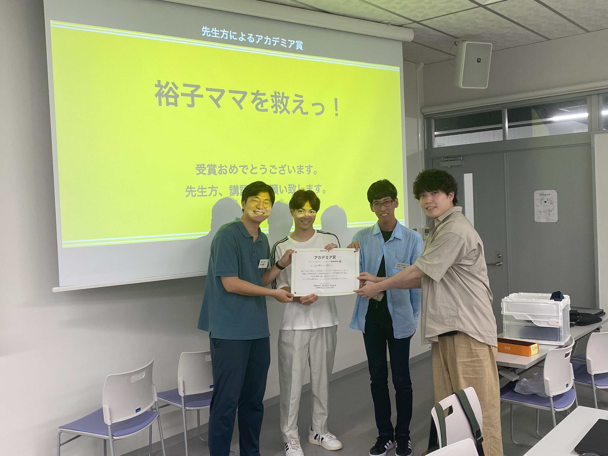
李、櫻井、吉光、尾関、佐藤（周）（チーム名：裕子ママを救えっ！）：アカデミア賞、研究×社会実装ワークショップ Discover！（2025.6）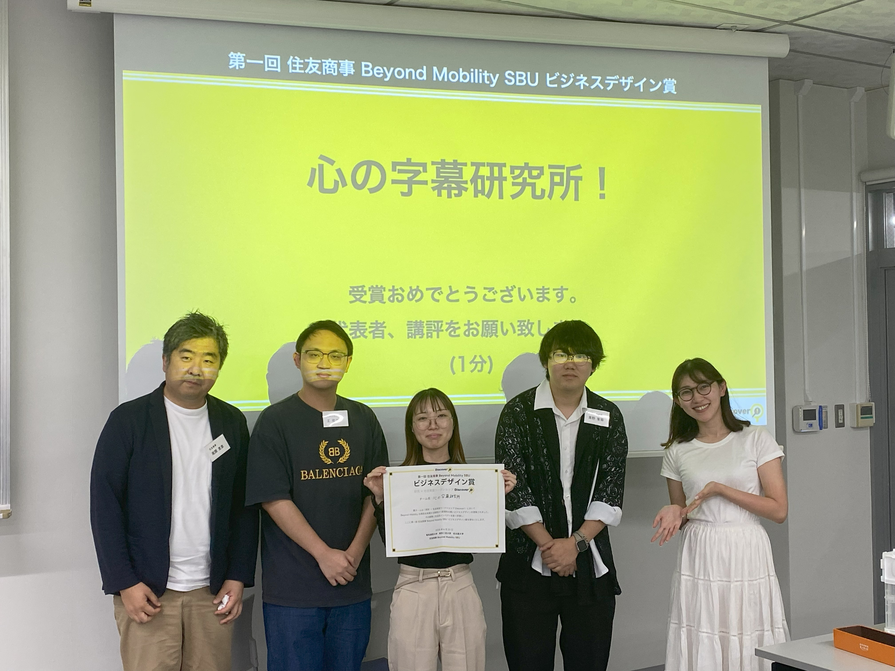
宇野、王、高野、守谷（チーム名：心の字幕研究所）：第一回住友商事Beyond Mobility SBU ビジネスデザイン賞、研究×社会実装ワークショップ Discover！（2025.6）- （2025.05.30）5月27日（火）～5月30日（金）に大阪国際会議場（グランキューブ大阪） で行なわれた人工知能学会全国大会（JSAI2025）においてM1の李基響君が発表を行ないました。また、片上が共著の発表も行なわれました。
- 李基響, 宮本友樹, 片上大輔：対人関係の親密化過程に基づいて継続的な関係を築く対話エージェントシステムの開発、人工知能学会全国大会（JSAI2025）、3R1-OS-45-03（2025.5）
- 宮本友樹, 片上大輔, 田中貴紘：運転支援エージェントの発話決定フレームワーク、人工知能学会全国大会（JSAI2025）、2D5-GS-9-05（2025.5）
- （2025.3.24） D3 1名、4年生13名の学生が卒業しました。B4の李君が、学部の総代として学長賞と松川サク工業賞を受賞しました。卒業された皆様、おめでとうございます。
- （2025.03.01） HAIシンポジウム2025において B4の石黒仁菜さんが口頭発表、福島颯太さんがポスター発表を行ないました。石黒仁菜さんが学生奨励賞を受賞しました。後日、賞状が授与される予定です。この研究は、認知症のケア技法であるユマニチュードの考え方を取り入れた認知症介護トレーニングシステムを開発し、家族介護者の認知症理解の向上と心理的負担軽減を目指しています。声かけのフィードバックのために介護経験者 150人の主観評価と音声特性の相関分析を行った結果、提案システムで算出する話速や抑揚に有効性が示されたことを報告しました。
- （2024.12.01）コミュニケーションとインタラクション合同研究討論会において、B4の浅倉昴輝さん、石黒仁菜さん、岩野良太朗さん、木村太洋さん、工藤悠さん、篠原優太さん、孫堅さん、武井一晃さん、田中悠貴さん、南雲天来さん、福島颯太さん、湯川未帆さん、李基響さんが発表を行いました。沢山のコメントをもらいました。関係者の皆様ありがとうございました。
- （2024.11.15） 3月に卒業した西尾さん、澁江さんと電通大の宮本先生らとの研究が論文誌（ショートノート）として採録が決定しました。
- （2024.11.05）「「褒めて癒す」人に寄り添うパートナー｜進化するコミュニケーションロボット」というタイトルのインタビュー記事が公開されました。インタビューはクリックアンドペイ合同会社の独占インタビュー記事として掲載されたものです。
- （2024.9.06） 人工知能学会の企画SIAI#6産学クロススクエア「ミライをつくるAI人材」を企画しました。お台場産総研で9/6～7の2日間で行なわれました。片上は大学展示のリーダーとしてお手伝いさせていただきました。大学からは人工知能分野に関係する14研究室、企業からは10社が参加しました。研究室からも8人の学生が参加しました。AIやデータ分析技術を企業で活かしたい学生・若手とAI関連企業とマッチングする新しい試みです。
- （2024.9.05） 第32回インテリジェント・システム・シンポジウムFAN2024において、B4の南雲天来君、李基響君、木村太洋君が口頭発表を行いました。
- （2024.9.05） 片上が日本知能情報ファジィ学会より貢献賞を受賞しました。
- （2024.8.23） 片上が第23回認知的コミュニケーションワークショップにおいて招待講演を行ないました。
- （2024.8.06） 片上が第56回東海ファジィ研究会in蒲郡（蒲研2024）において招待講演を行ないました。
- （2024.5.15）「人間とAIの理想的な関係性」というタイトルのインタビュー記事が公開されました。インタビューは株式会社EXIDEAのWebマガジン『So-gúd（ソウグウ）』に掲載されたものです。
- （2024.5.30） 第38回人工知能学会全国大会JSAI2024＠アクトシティ浜松において企画セッション「KS-8：人狼知能コンテスト2024国内大会自然言語部門」を企画者の一人として企画しました。
- （2024.5.15） 電通大の宮本先生とM2の山下智矢さんの研究が論文誌（ショートノート）として採録が決定しました。
- （2024.5.04）ヒューマンインタフェース学会において、特集号「エージェントとインタラクションデザイン」Vol. 26, No. 2 (2024年5月発行)を企画しました。担当編集委員の皆様、査読者の皆様、事務局の皆様ありがとうございました。
- （2024.3.28） 事務補佐の春木さんが一時退職となりました。ありがとうございました！
- （2024.3.25）ケアスル介護さんにおいて、岩崎さん、大井さん、山中さんの成果として「認知症患者の家族介護者に向けた傾聴トレーニングシステム」に関する記事が掲載されました。
- （2024.3.21） M2 5名、4年生12名の学生が卒業しました。卒業された皆様、おめでとうございます。
- （2024.3.05） HAIシンポジウム2024において、B4の太田泰介君、山中祐樹君が口頭発表、原田和麻君、平野裕人君、西田裕一君、束野海紀君、西尾駿一君がポスター発表を行いました。沢山のアドバイスをいただきました。運営の皆様、参加された皆様お疲れ様でした。
- （2024.2.20） 国際会議CcSR2024において、B4の澁江樹君が口頭発表を行いました。
- （2023.12.7） 2023年に入り5本論文誌が採録されました。いずれも在籍していた学生さんと共著者の皆さんとで頑張った成果が認められたものと思います。また、修士2年の鈴木章弘君がHAIシンポジウムでMost Outstanding Research Award（最優秀論文賞）を受賞するなど活躍されました。お疲れ様でした！
- （2023.9.19） 3年生13名が配属されました。今後の活躍を期待しています！
- （2023.8.17） 研究室配属希望の皆さんへを更新しました
- （2023.3.27） 事務補佐の永島さんが退職となりました。お疲れ様でした。これまで長い間支えていただきありがとうございました！
- （2023.3.24） M2 4名、4年生11名の学生が卒業しました。M2の侭田圭太さんが専攻の首席として総代、M2の満田雄斗さんが総代代理、M2の藤嶋大樹さんが大学院で最も優れた業績をあげた学生として杉浦六右衛門賞、B4の木原諒子さんが学部のコース首席として工学部長賞と松川サク工業賞、B4の松尾篤さんが同窓会長賞を受賞しました。卒業された皆様、おめでとうございます。
- （2023.3.18） HSS-DC2023＆第34回HSS研究会において、M2の満田雄斗君、B4の大井晏吾君がポスター発表を行い、満田君が特別賞を受賞しました。参加された皆様お疲れ様でした。
- 特別賞
- 満田雄斗、宮本友樹、片上大輔
「行動予測を用いたALS等の重度肢体不自由者向け対話型生活支援システムの開発と評価」 - （2023.3.16）言語処理学会第29回年次大会NLP2023において、B4の松尾篤君が口頭発表を行いました。
- （2023.03.05） HAIシンポジウム2023においてM2の鈴木章弘君が討論セッションに選抜され口頭発表を行ない、Most Outstanding Research Award（最優秀論文賞）を受賞し、賞状と副賞としてクリスタルトロフィーが授与されました。この研究は、人間同士の親密化過程の理論に基づいて人間とエージェントとの間に長期的な関係性を構築する対話システムを開発・提案しています。おめでとうございます。
- Most Outstanding Research Award（最優秀論文賞）
- 鈴木章弘、宮本友樹、片上大輔
「継続的な関係を築くための親密化過程を用いたマルチデバイス化対話システムの開発」 - （2023.3.05） HAIシンポジウム2023において、M2の鈴木章弘君が討論セッションに選抜され口頭発表、B4の梅木雄大君がポスター発表を行いました。沢山のアドバイスをいただきました。運営の皆様、参加された皆様お疲れ様でした。
- （2023.3.3）情報処理学会第85回全国大会において、B4の佐藤涼樹君が口頭発表を行いました。
- （2022.12.16）HCGシンポジウム2023において、M2の満田雄斗君が口頭発表とポスター発表を行いました。
- （2022.12.14） 12/13-14に行われました人工知能学会 言語・音声理解と対話処理研究会（SLUD）主催の対話システムシンポジウムライブコンペティションのシチュエーショントラックにおいてB4の木原諒子さんが優秀賞を受賞しました。東京電機大学の前田・酒造研究室との共同成果となります。おめでとうございます。
- 人工知能学会 言語・音声理解と対話処理研究会 対話システムシンポジウムライブコンペティション シチュエーショントラック優秀賞 木原諒子
- 大野瞬、石井均、木原諒子、片上大輔、酒造正樹、前田英作
「即効性のある代替案の提供で友人に謝罪を行うマルチモーダル対話エージェント」 - 対話システムライブコンペティション5
- 対話システムライブコンペティション：オーディエンスの前で実際に対話システムを動作させ、評価を行うイベント
- シチュエーショントラック：オープンな雑談とは異なり、設定された状況の中で状況にあった人らしい対話を行う能力を競う。対人関係やTPOを踏まえた高度な対話システムの実現の第一歩となることを狙いとしている。
- （2022.09.22） FSS2022においてB4の松尾篤君が口頭発表を行ないFSS優秀発表賞を受賞しました。おめでとうございます。
- FSS優秀発表賞 松尾篤
- 松尾篤、宮本友樹、片上大輔、宇佐美まゆみ
「対話型擬人化エージェントの言語的配慮に対する受容性の6か国異文化比較に関する研究ークラウドソーシングによる大規模印象調査２ー」 - （2022.6.28） 7/1（金）から3（日）にかけて、お台場にある日本科学未来館においてアンドロイドと対話する実証実験を行ないます。ぜひご参加下さい。ご参加いただける方はメールにてご連絡ください。
- （2022.5.1） 3月に卒業した宮本友樹君が筆頭の研究が人工知能学会誌に採録が決定しました。
- （2022.4.1） 博士後期課程で学位を取得した宮本友樹君が電気通信大学に着任しました。今後のご活躍をお祈りします。
- （2022.3.23） D3 1名、M2 4名、4年生9名の学生が卒業しました。D3の宮本友樹君、M2の磐下大樹君、B4の角田浩章君がそれぞれ首席で、B4の増田有貴君が総代となりました。卒業された皆様、おめでとうございます！
- （2021.3.23） 事務補佐の中島さんが退職となりました。お疲れ様でした。これまで支えていただきありがとうございました！
- （2021.12.27） M1藤嶋大樹君が筆頭の下記の論文の評価によりヒューマンインタフェース学会 若手卓越研究賞を受賞しました。
- （2021.11.25） M1藤嶋大樹君が筆頭のデジタルサイネージの擬人化エージェントによるストレス軽減手法を提案した研究が、ヒューマンインタフェース学会誌に採録が決定しました。
- （2021.11.9） D3の宮本君が、国際会議HAI2021（採択率38.2%）でトップ5%の研究と評価されOutstanding Research Awardを受賞しました。本賞は、HAI2021の採択論文26（全投稿数68本）のうち3本に選ばれたことになります。受賞した3本のうち唯一の学生の発表でした。本論文は、音声発話によって運転者を支援する運転支援エージェントにおいて、適切な発話戦略の設計を行う研究です。ビデオを用いた主観評価実験（n=240）により、意図をほのめかすオフレコード戦略と話し手の意図を明示的に伝える他のポライトネス戦略に基づいた発話設計を行い、運転支援エージェントの発話に対する運転者の受容性を比較し、言語的配慮（ポライトネス）を伴う明示的な指示を行うことの有用性とその発話戦略による特性を示しました。運営の皆様お疲れ様でした！
- （2021.10.16） 東京工芸大学の「広報担当が研究室に訪問してみた」の取材を受けました！以下のYouTubeにて見ることができます。 VIDEO / YOUTUBE東京工芸大学 広報担当による研究室訪問YouTubeで動画を見る ↗
- （2021.9.17） 3年生11名が配属されました。今後の活躍を期待しています！
- （2021.08.26） M2宮﨑健斗君が筆頭の就職面接場面における評価モデルを提案した研究が、人工知能学会誌に採録が決定しました。
- （2021.08.26） D3宮本友樹君が筆頭の雑談対話システムにおいて心理的に近づくような発話戦略の影響を調査した研究が、人工知能学会誌に採録が決定しました。
- （2021.07.31） 片上がプログラム委員長を務めた人工知能学会全国大会2020の国際セッションで選抜された論文がSpringerから"Advances in Artificial Intelligence - Selected Papers from the Annual Conference of Japanese Society of Artificial Intelligence (JSAI2020)"として発行されました。発行まで1年以上かかりました。沢山の方にお世話になりました。ありがとうございました。
- （2021.07.31） D3宮本友樹君が筆頭で昨年人工知能学会全国大会2020の国際セッションで発表した研究が、採択率40％でセレクトされ、Springerに掲載されました。
- （2021.03.10） HAIシンポジウム2021にてショート発表を行った以下の論文がImpressive Short-paper Award(優秀論文賞(ショート))（60件のショート発表のうち2件選出）を受賞しました。これは、国語研究所の宇佐美先生との共同研究であり、M2の山本君とD2の宮本君に中心に助けてもらいながら行った、エージェントの言語的配慮の異文化における受容性を調査した研究になります。 VIDEO / YOUTUBE研究室の活動紹介動画YouTubeで動画を見る ↗
- （2020.3.10） HAIシンポジウム2021において、B4の藤嶋大樹君がロング発表、B4の鈴木智丸君と侭田圭太君、片上がショート発表において発表を行いました。沢山のアドバイスをいただきました。運営の皆様、藤嶋君、鈴木君、侭田君お疲れ様でした。
- （2021.01.20） D2の宮本君を筆頭著者として、査読付きオープンアクセス科学ジャーナルのFrontiers in Psychology（IF=2.390 (2020)）に投稿していた論文が採録されました。運転支援を行う擬人化エージェントの発話戦略の受容性に関する研究になります。採録まで苦労がありましたが、よい論文になったと思います。工芸大、国語研、名古屋大の先生方との共同研究になります。
- Influence of Social Distance Expressed by Driving Support Agent’s Utterance on Psychological Acceptability
Tomoki Miyamoto, Daisuke Katagami, Yuka Shigemitsu, Mayumi Usami, Takahiro Tanaka, Hitoshi Kanamori, Yuki Yoshihara and Kazuhiro Fujikake - （2021.01.13） D2の宮本君が「2021年度日本学術振興会 特別研究員（DC2）」に採用内定されました。本学において、今回の採用は非常に素晴らしい成果だと思います。今後も頑張ってください！
- （2020.12.13） ６大学合同発表会（オンライン開催）においてM1の永井望君、B4の満田雄斗君、渡邊時貞君が発表を行ない、満田君が優秀口頭発表賞を受賞しました。参加された皆様ありがとうございました。
- 優秀口頭発表賞
満田雄斗
「ALS等の重度肢体不自由者向け対話型QOL向上システムの提案」 - （2020.10.26） 3年生が10名配属されました。今後の活躍を期待しています！
- （2020.10.01） 事務補佐の永島さんが10月から復帰されました。どうぞよろしくお願いします。
- （2020.10.12） 次年度配属のための研究室説明会が10月12日に行われます。配属を希望する皆さんに会えるのを楽しみにしています。
- （2020.7） 国際会議WCCI2020においてM1の磐下大樹君が発表を行ないました。
- M. Iwashita, D. Katagami: Psychological Effects of Compliment Expressions by Communication Robots on Human, IEEE World Congress on Computational Intelligence (WCCI) 2020, The International Joint Conference on Neural Networks (IJCNN) (2020.7)
- （2020.3.26） 3年勤められた事務補佐の永島さんが本日が最終日となりました。3年間ありがとうございました！4月から中島さんにお願いすることになりました。
- （2020.3.6） HAIシンポジウム2020において、B4の鈴木誓梧君と伊藤稜平君が、ポスター発表において論文投稿を行いました。残念ながら、新型コロナウイルスの影響により発表自体は出来ませんでしたが、運営の皆様、鈴木君、伊藤君、お疲れ様でした。
- （2020.3.23） 4年生8名が卒業しました。新型コロナウイルスの関係で、式典は中止になり学位授与のみの簡易の授与式になりました。学部4年の磐下大樹君が首席、永井望君が総代代理となり、磐下君が優れた業績を残した学生に贈られる工学部長賞を受賞しました。卒業された皆様、おめでとうございます！
- （2020.1.25）HSSデザインコンテスト2020において、B4上野大雅君が以下の賞を受賞しました。
- HSSデザインコンテスト 特別賞
上野大雅、片上大輔（東京工芸大）、鳥海不二夫（東京大）、大澤博隆（筑波大）、稲葉通将（電通大）、狩野芳伸（静岡大）、大槻恭士（山形大）
「人狼知能同士の対戦ログデータを用いたデモンストレーション自動生成システムの開発」
賞状とトロフィーを授与
- （2019.12.01） ５大学合同発表会においてB4の宮崎健斗君、伊藤稜平君、鈴木誓梧君が発表を行ない、宮崎君が優秀口頭発表賞、伊藤君、鈴木君が優秀ポスター発表賞を受賞しました。おめでとうございます。参加された皆様ありがとうございました。
- 優秀口頭発表賞
宮崎健斗
「マルチモーダル情報に基づく就職面接場面における被面接者の評価モデルの提案」 - 優秀口頭発表賞
伊藤稜平
「スマートスピーカーとホログラムを用いた擬人化エージェントシステムの開発」 - 優秀ポスター発表賞
鈴木誓梧
「盛り上がりを重視したe-sports実況システムの開発」 - （2019.10.21） 3年生が10名配属されました。今後の活躍を期待しています！
- （2019.08.30） FSS2019においてD1の宮本友樹君が、昨年同会議で行った口頭発表においてIEEE Computational Intelligence Society Young Researcher Awardを受賞しました。おめでとうございます。
- IEEE Computational Intelligence Society Young Researcher Award
Tomoki Miyamoto
Co-authored with Daisuke Katagami, Yuka Shigemitsu, Mayumi Usami, Takahiro Tanaka, Hitoshi Kanamori, Kazuhiro Fujikake, and Yuki Yoshihara
Design of linguistic behaviors according to driver attributes support agent based on politeness theory - （2019.08.16） 人工知能に関する世界のトップカンファレンスであるIJCAI2019がマカオで開催され、片上と修士1年の山本隆太郎君がAI Video Competitionに投稿したビデオがMost Societally Beneficial Video Awardを受賞しました。AI Video Competitionにおける全投稿において2番目の賞になります。
- Most Societally Beneficial Video Award
Daisuke Katagami, Ryutaro Yamamoto, Fujio Toriumi, Hirotaka Osawa, Michimasa Inaba, Yoshinobu Kano, Takashi Otsuki
Find a liar AI!: “The AIWolf game viewer” which visualizes the battle of the strongest five AI players in the AIWolf competition. - （2019.03.19） 修士１名、4年生8名が卒業しました。修士2年の宮本君が専攻、工学研究科をどちらも首席で卒業し、大学院で優れた業績を残した学生に贈られる杉浦六右衛門賞を受賞しました。また、B4の清水君が工学部同窓会長賞を受賞しました。卒業された皆様、おめでとうございます！
- （2018.12.01） ５大学合同発表会においてB4の清水裕太郎君がポスター発表を行ない、最優秀ポスター発表賞を受賞しました。おめでとうございます。参加された皆様ありがとうございました。
- 最優秀ポスター発表賞
清水裕太郎
「擬似母性を表出する発話機能付き膝枕型ロボット」 - （2018.10.15） 今年も3年生が8名配属されました。今後の活躍を期待しています！
- （2018.09.04） FSS2018においてM2の宮本友樹君が口頭発表とポスター発表を行ない、ポスター発表において最優秀賞を受賞しました。おめでとうございます。お話を聞いて下さった皆様ありがとうございました。
- ポスター・デモセッション最優秀賞
宮本友樹、片上大輔、重光由加、宇佐美まゆみ、 田中貴紘、金森等、藤掛和広、吉原佑器
「ポライトネス理論に基づく運転支援エージェントの運転者属性と運転状況に応じた言語的振る舞いの設計」 - （2018.08.24） ゲーム開発者の会議CEDEC2018＠パシフィコ横浜において第４回人狼知能大会が行なわれました。B4の曽根君、山本君が開発した人狼知能エージェントの紹介を行ないました。
- （2018.06.05） 昨年JSAI2018においてオーガナイズドセッション「人狼知能と不完全情報ゲーム」を企画・開催しました。8件の人狼に関する研究発表と(特別企画)人狼知能プレ大会2018が行われました。ありがとうございました。
- （2018.05.25） 昨年CEDEC2017において行った人狼知能大会の様子を詳しい記事にしていただいておりました。ありがとうございました。今年も8/22～24で行う予定です。ぜひ自分の人狼知能を作成してご参加下さい。詳細は人狼知能プロジェクトページで。
- （2018.03.22） 修士2名、4年生7名が卒業しました。修士2年の中村君が専攻首席で総代となり、とB4の青木君が学科首席で工学部長賞を受賞しました。卒業された皆様、おめでとうございます！
- （2017.12.12） HAIシンポジウム2017において、M1の宮本友樹君がStudent Encouragement Award（学生奨励賞）を受賞しました。
- Student Encouragement Award（学生奨励賞）
宮本 友樹、片上 大輔、重光 由加（東京工芸大学）
「Positive politenessの戦略に基づいて発話する擬人化エージェントが人間と構築する新しい関係性」 - （2017.12.12） 運営委員長を務めさせていただきましたHAIシンポジウム2017が無事終了しました。153名の参加者にお越しいただき、ポスターデモ発表者が過去最高の件数になりました。ありがとうございました。
- （2017.9.24） ラジオJ-WAVE 情報番組「STEP ONE」にて生放送に出演してきました。「放送日時9/20（水）9:20～『BEHIND THE SCENE』AIが「人狼」をプレイ！？人工知能は人の心理まで読めるの？」という内容で、「AIと人狼（最新の人工知能の世界）」について話をしました。終了後にNAVIGATORのサッシャさんとASSISTANTの寺岡さんと一緒に写真を撮っていただきました。
- （2017.9.24） HAIシンポジウム2017が金沢歌劇座で12/11～12で開催されます。ぜひご参加下さい。
- （2017.9.24） HCGシンポジウム2017＠金沢歌劇座において企画セッション「雰囲気工学」を企画しました。ぜひご参加下さい。
- （2017.9.13） FSS2017＠山形でオーガナイズドセッション「人間共生システム」を前田先生（立命館大）、井上先生（福井大）と企画しました。
- （2017.6.1） SIG-AI2017＠早稲田大学で「コミュニケーションと雰囲気」をテーマに研究会を企画しました。
- （2017.5.23） JSAI2017＠名古屋でオーガナイズドセッション「ＨＡＩ、その心とは？: 人工知能をベースとしたインタラクション技術を考える」を今井先生（慶應大）、寺田先生（岐阜大）と企画しました。
- （2017.3.22） 卒業式が行われました。B4の古屋敷さくらさんが総代、宮本友樹君が総代代理を務めました。また、古屋敷さくらさんが同窓会長賞を受賞しました。卒業された皆様、おめでとうございます。
- （2017.3.6） HSSデザインコンテスト2017において、3名の学生が以下の賞を受賞しました。
- HSSデザインコンテスト 特別賞
中村洋文、片上大輔（東京工芸大）、鳥海不二夫（東京大）、大澤博隆（筑波大）、稲葉通将（広島市立大）、篠田孝祐（電気通信大）、狩野芳伸（静岡大）
「人狼BBSのログデータを利用した人狼知能の発話プロトコル文の言い換えによる人間らしさの表出」
賞状とトロフィーを授与
- HSSデザインコンテスト 特別賞
宮本友樹、片上大輔（東京工芸大）
「ポジティブ・ポライトネスによって構築される新しい関係性 ～人と擬人化エージェントのコミュニケーション発展に向けて～」
賞状とトロフィーを授与
- HSSデザインコンテスト 審査員特別賞
古屋敷さくら、片上大輔、荒井良徳（東京工芸大）
「Twitterと社会的対話ロボットを用いたTV視聴時の懇意性存在感の生成」
賞状を授与
- （2016.12.11） 大学合同研究発表会において、M1の中村洋文君、B4の亀田悠爾君がそれぞれ優秀賞を受賞しました。
- 優秀口頭発表賞
中村洋文
「人狼BBSのログデータを利用した人狼知能の発話の言い換えによる雰囲気生成」 - 優秀ポスター発表賞
亀田悠爾
「共感アンテナAHOGEに基づく聴導犬ロボットの感情表出機構の開発」 - （2016.12.8） HCGシンポジウム2016において、B4の古屋敷さくらさんが学生優秀インタラクティブ発表賞を受賞しました。
- 学生優秀インタラクティブ発表賞
古屋敷さくら（東京工芸大）、片上大輔（東京工芸大）、荒井良徳（東京工芸大）
「Twitterと社会的対話ロボットを用いた懇意性存在感を表出する人工的雰囲気の生成」 - （2016.12.8） 高知で行われましたHCGシンポジウム2016において、オーガナイズセッション「雰囲気工学」を企画し、2セッション8件の発表が行われました。参加された皆様お疲れ様でした。
- （2016.12.4） HAIシンポジウム2016において、3月に卒業したB4の菊地朗史君がImpressive Poster Award（優秀賞）を受賞しました。
- Impressive Poster Award（優秀賞）
菊地朗史（東京工芸大）、片上大輔（東京工芸大）
「なんでもアニマシー： 擬似生物性表現付加装置の開発」 - （2016.12.4） 実行委員長を務めさせていただいたHAIシンポジウム2016が無事終了いたしました。今年度も昨年に引き続き東京大学駒場キャンパスで開催し150名もの方に参加していただきました。またポスターセッションは37件と過去最大となりました。ありがとうございました。
- （2016.10.17） 3年生が7名配属されました。今後の活躍を期待しています！
- （2016.9.19）「人狼知能」 ツイッタ―討論会 第二回 「人狼知能が鍛える人工知能技術とは？」 に参加しました。
- （2016.9.19）「人狼知能」 ツイッタ―討論会 第一回 「強い人狼知能とは？」 が以前行われたのでリンクを張りました。
- （2016.9.19）Twitter討論：CEDEC2015 AIチャレンジ「人狼知能大会」に向けてプレトーク が以前行われたのでリンクを張りました。
- （2016.9.1）日本知能情報ファジィ学会から貢献賞をいただきました。ありがとうございました。
- （2016.6.15） 森北出版から人狼知能の本が出版されました。現在Amazonで購入可能です。人狼に興味ある人も、読みやすく、楽しい本になっていると思います。ポチッとよろしくお願いいたします。
- （2016.3.23） 卒業式が行われました。B4の中村洋文君が学長賞を受賞しました。また、B4の菊地朗史君が総代代理を務めました。卒業された皆様、おめでとうございます。
- （2016.01.08） WirelessWire News/AIの記事 「嘘をつく、嘘をつかれる人工知能をつくる──人狼ゲームをする「人狼知能」をつくるわけ（後編）」にCEDEC2015で講演中の写真が掲載されました。
- （2015.12.28） 人工知能学会学会誌 「私のブックマーク」 に 雰囲気工学 の記事が掲載されます。一足先にWebでアップされました。
- （2015.12.17） HCGシンポジウム2015において、M2の宮田歩君が学生優秀インタラクティブ発表賞を受賞しました。
- 学生優秀インタラクティブ発表賞
宮田歩（東京工芸大）、片上大輔（東京工芸大）、湯浅将英（湘南工科大）、大村英史（東京理科大）、田中貴紘（名古屋大）、小林一樹（信州大）
「言語フィラーを発する説明エージェントが人間に与える影響の調査」 - （2015.12.12） 4大学合同研究発表会において、M2の宮田歩君、B4の佐藤翔吾君がそれぞれ優秀賞を受賞しました。
- 優秀口頭発表賞
宮田歩（東京工芸大）、片上大輔（東京工芸大）、湯浅将英（湘南工科大）、大村英史（東京理科大）、田中貴紘（名古屋大）、小林一樹（信州大）
「「えーっと・・・。」で始まる人間らしさ ～説明エージェントの言語フィラーが人間に与える印象の調査～ 」 - 優秀ポスター発表賞
佐藤翔吾（東京工芸大）、片上大輔（東京工芸大）、稲葉通将（広島市立大）、田中貴紘（名古屋大）
「同乗者効果によりドライバーの安全運転を促す擬人化エージェントの開発」 - （2015.12.6） 実行委員長を務めさせていただいたHAIシンポジウム2015が無事終了いたしました。今年度は東京大学駒場キャンパスで開催し130名もの方に参加していただきました。ありがとうございました。
- （2015.10.19） 3年生が8名配属されました。活躍を期待しています。
- （2015.10.2） JAWS2015において、B4の中村洋文君がポスター発表優秀賞を受賞しました。
- ポスター発表優秀賞
中村洋文 （東京工芸大学）
「人狼BBSのログデータを用いたAIの自然な議論空間の構築」
共著：片上大輔（東京工芸大）、鳥海不二夫（東京大学）、大澤博隆（筑波大学）、稲葉通将（広島市立大学）、篠田孝祐（電気通信大学）
- （2015.9.28） 3年生に向けて研究室配属の説明を行いました。来週10/5は、研究室見学です。研究室でお待ちしています！
- （2015.9.15） 9/14～15で研究室全員で諏訪湖に研究室合宿に行ってきました。
- （2015.9.11） Webサーバの故障により、2週間ほどHPが見れなくなっておりました。ご迷惑をおかけいたしました。
- （2015.9.4） FSS2015＠電気通信大学でオーガナイズドセッション「人間共生システム」を企画・開催しました。大変多くの方にご投稿いただき、6セッション26件のご発表をしていただきました。関係者の皆様・参加して下さった皆様ありがとうございました。
- （2015.9.4） FSS2015＠電気通信大学でオーガナイズドセッション「雰囲気工学」を企画・開催しました。4件のご発表をしていただきました。関係者の皆様・参加して下さった皆様ありがとうございました。
- （2015.8.28） 8月26から28日にパシフィコ横浜で行われたゲーム開発者のための日本最大の会議CEDEC2015において、人狼知能大会を開催し、講演を行ってきました。大会の内容はたくさんのメディアやニュース記事において紹介されました。
- （2015.6.2） JSAI2015＠公立はこだて未来大学でオーガナイズドセッション「HAIで創り上げる社交性と雰囲気」を企画・開催しました。10件のご発表をしていただきました。関係者の皆様・参加して下さった皆様ありがとうございました。
- （2015.3.23） 卒業式が行われました。卒業された皆様、おめでとうございます。
- 修士2年の小林優君が大学院電子情報工学専攻の総代を務めました。
- B4の齋藤好佑君が後援会長賞を受賞しました。
- （2015.3.10） HSSデザインコンテスト2015において、2名の学生が以下の賞を受賞しました。
- HSSデザインコンテスト インパクト賞
大森翔（東京工芸大）、片上大輔（東京工芸大）
「アロマロイド：においにより人間からの印象を向上させるロボットの開発」
賞状とトロフィーを授与
- HSSデザインコンテスト 審査員特別賞
宮田歩（東京工芸大大学院）、片上大輔（東京工芸大）
「声の表現を変える擬人化エージェントの説明力が人間に与える影響の調査」
賞状を授与
- （2014.12.18） HCGシンポジウム2014において、修士2年の小林君と菅原君の発表が、それぞれ以下の賞を受賞しました。
- 学生優秀インタラクティブ発表賞
小林優（東京工芸大学大学院）、大澤博隆（筑波大学）、稲葉通将（広島市立大学）、篠田孝祐（電気通信大学）、鳥海不二夫（東京大学）、松原仁（はこだて未来大学）、片上大輔（東京工芸大学）
「擬人化エージェントを用いた議論の雰囲気を実現する人狼対戦システムの開発」
- 学生優秀インタラクティブ発表賞
菅原龍光（東京工芸大学大学院）、片上大輔（東京工芸大学）
「複数のディスコミュニケーションロボットが作り出す新しいコミュニケーション空間」 - （2014.12.17） HCG2014＠下関でオーガナイズドセッション「雰囲気工学」を企画・開催しました。大変多くの方にご投稿いただき、4セッション16件の方にご発表をしていただきました。関係者の皆様・参加して下さった皆様ありがとうございました。セッションからは3件のセッション賞の受賞がありました。おめでとうございます。
- （2014.11.19） 人工知能学会公募型AIセミナー「人狼知能研究のすすめ」において行われた人狼知能AIのコンテストにおいて、修士2年の小林君が作成したAIプログラムが、2位を獲得しました。
- 人狼知能AIコンテスト 2位 小林 優
- （2014.10.31） 国際会議 2nd International Conference on Human-Agent Interaction (HAI2014)において、修士2年の小林君の発表が以下の賞を受賞しました。
- Honorable Mention Poster Award
Yu Kobayashi, Hirotaka Osawa, Michimasa Inaba, Kosuke Shinoda, Fujio Toriumi and Daisuke Katagami
"Development of Werewolf Match System for Human Players Mediated with Lifelike Agents"
- （2014.10.29） JAWS2014において、片上の共著の発表が発表賞を受賞しました。
- 発表賞 平田 佑也（広島市立大学）
平田 佑也、稲葉通将、高橋健一、鳥海不二夫、大澤博隆、片上大輔、篠田孝祐
「人狼ゲームにおける役職Coming-Out情報の自動取得、ポスターセッション」 - （2014.10.21） インテリジェント・システム・シンポジウム（FAN2014）において、片上の共著の2件の発表が以下の賞を受賞しました。
- 優秀論文賞
鳥海不二夫（東京大学）、稲葉通将（広島市立大学）、大澤博隆（筑波大学）、 片上大輔（東京工芸大学）、篠田孝祐（電気通信大学）
「人狼における学習」
- FANプレゼンテーション賞 稲葉通将（広島市立大学）
稲葉通将、鳥海不二夫、大澤博隆、片上大輔、篠田孝祐
「 人狼ゲームにおける役職の強さの定量化」 - (2014.10.15) 3年生が9名配属されました。活躍を期待しています。
- (2014.9.29) 来年配属予定の3年生向けに研究室の説明会を行います。配属希望の学生は、ぜひ参加して下さい。
- (2014.9.26) 日本知能情報ファジィ学会において、人間共生システム研究会主催の論文特集号「ヒューマンインタラクティブシステム」の論文を募集しております。論文投稿締切：2015年2月23日、掲載予定号：Vol. 27, No. 6 (2015年12月号)です。
- (2014.9.21) 愛知県蒲郡市で行われた認知的コミュニケーションWSにおいて招待講演を行ってきました。
- (2014.9.1) 9/1～3に高知城ホールでFSS2014が行われました。人間共生システム研究部会で企画した企画セッションは2日間5セッションに渡り、合計21件のご発表を頂きました。ご参加・ご協力頂いた皆様ありがとうございました。私も発表させていただきました。
- (2014.8.22) 立命館大学朱雀キャンパスで行われたHCS-VNV研究会において招待講演を行ってきました。
- （2014.5.16） 昨年に引き続き人工知能学会全国大会JSAI2014＠愛媛でオーガナイズドセッション「雰囲気工学」（2回目）を企画・開催しました。招待講演を含め9件の方にご発表をしていただきました。関係者の皆様・参加して下さった皆様ありがとうございました。また大会では5件の発表を行いました。
- （2014.3.22） 4年生9名が卒業されました。おめでとうございます！
- （2014.3.2） HSSデザインコンテスト2014において、4名の学生が以下の賞を受賞しました。
- HSSデザインコンテスト 優秀賞
江幡直樹（東京工芸大）、湯浅将英（湘南工科大）、片上大輔（東京工芸大）
「共食エージェントによる共食の再現」
賞状とトロフィーを授与
- HSSデザインコンテスト 優秀賞
本郷雅人（東京工芸大）、田中貴紘（東京農工大）、片上大輔（東京工芸大）
「HAL Talk：OBDを用いた自動車とドライバー間の新しい関係性構築のためのインタラクション設計」
賞状を授与とトロフィーを授与 - HSSデザインコンテスト 優秀賞
宮澤和也（東京工芸大）、片上大輔（東京工芸大）、大村英史（理研/JST）、小林一樹（信州大）、田中貴紘（東京農工大）、湯浅将英（湘南工科大）、新田克己（東京工業大）
「異文化体験ゲームによる人工的雰囲気の生成とインタラクションデザイン」
賞状を授与とトロフィーを授与 - HSSデザインコンテスト インパクト賞
高久奨乃（東京工芸大）、稲葉通将（広島市立大）、大澤博隆（筑波大）、篠田孝祐（電気通信大）、西野順二（電気通信大）、鳥海不二夫（東京大）、片上大輔（東京工芸大）
「人狼ゲームにおいてノンバーバル情報が与える影響について」
賞状を授与 - （2013.12.7） HAIシンポジウム2013において、B4の本郷君と、森田さんの2名が発表を行いました。本郷君は、討論セッションに選抜され40分の発表を行いました。
- 本郷雅人、片上大輔 （東京工芸大学）
「HAL Talk：OBDを用いた自動車とドライバー間の新しい関係性構築のためのエージェント開発」 討論セッションに選抜 - 森田沙織、片上大輔 （東京工芸大学）
「あなたは目の前の擬人化エージェントを信頼できますか？ ～擬人化エージェントの自己呈示による信頼性の向上～」
- 本郷雅人、片上大輔 （東京工芸大学）
- （2013.10.26） 生命ソフトウェアシンポジウム2013において、修士1年の小林君と、片上の共著の発表の2件の発表が優秀発表賞を受賞しました。
- 生命ソフトウェアシンポジウム2013 優秀発表賞
小林優、片上大輔 （東京工芸大学）
「F陣形に基づいた話しかけるインタラクティブデジタルサイネージの開発」
- 生命ソフトウェアシンポジウム2013 優秀発表賞
湯浅将英 （湘南工科大学）、片上大輔 （東京工芸大学）
「エージェントによる会話の雰囲気生成～雰囲気工学の可能性～」
- （2013.9.20） JAWS2013において、B4の江幡君、高久君、片上がポスター発表を行いました。2つの優秀ポスター賞を受賞しました。
- 優秀ポスター賞
高久奨乃 （東京工芸大学）
「人狼ゲームにおいてノンバーバル情報がプレイヤーに与える影響について」
- 優秀ポスター賞
片上大輔 （東京工芸大学）
「雰囲気工学～ヒューマンコミュニケーション研究の発展に向けて～」
- （2013.9.10） M1の菅原龍光君が大阪国際大学で行われた会議FSS2013にて口頭発表とポスターデモセッション発表を行いました。
- （2013.8.06） M1の小林優君、菅原龍光君が北海道大学で行われた国際会議iHAI2013にて発表を行いました。
- （2013.6.16） 厚木中学校にて、「ロボット大好き！かがく大好き！みんな集まれ」フェスタに人間共生システム研究室が参加しました。
- （2013.6.7） 人工知能学会全国大会JSAI2013＠富山でオーガナイズドセッション「雰囲気工学」をはじめて企画・開催しました。3セッション15件の方にご発表をしていただきました。ありがとうございました。
- （2013.2.23） HSSデザインコンテスト2013において、３名の学生が最優秀賞を含む以下の賞を受賞しました。
- HSSデザインコンテスト 最優秀賞
菅原龍光、片上大輔 （東京工芸大学）
「ディスコミュニケーションロボットの提案」
賞状とトロフィーを授与
- HSSデザインコンテスト インタラクティブ賞
小林優、片上大輔 (東京工芸大学)
「F陣形に基づくインタラクティブデジタルサイネージ」
賞状を授与
- HSSデザインコンテスト インパクト賞
荒堀拓哉、片上大輔(東京工芸大学)、角所考(関西学院大学)
「情報提供アナウンサーエージェントにおける表出モデル設計と印象評価」
賞状を授与
- （2013.2.20） B4の荒堀拓哉君の投稿した論文が人工知能学会論文誌に掲載されました。掲載は2013年3月号です。
- （2013.2.15） 4年生8名が卒論発表を終えました。お疲れさまでした。
- （2012.10.30） 4年生8名が中間発表を無事終えました。
- （2012.9.10） M1の仲地一世君がフランスパリで行われた国際会議RO-MAN2012にて発表を行いました。
- 9名の3年生が仮配属されました。
- 委員として参加しているヒューマンインタフェース学会の論文特集号「インタラクションのミニマムデザイン」において論文募集を行いました。論文投稿締切：2012年7月31日、掲載予定号：2013年2月号でした。
- 2012/6/10～15にAustraliaのBrisbaneで行われますWCCI2012(FUZZ-IEEE2012)でSpecial Session "Human Symbiotic Systems"を企画しました。
- 12/3～5に京都工芸繊維大学でHAIシンポジウム2011が行われました。片上研からは、佐々木君、高橋君が発表しました。
- 2012年電子情報通信学会総合大会＠岡山にて、シンポジウムセッション「エージェントと社会性」を企画しました。セッションは3月22日（木）でした。
- 人工知能学会において、論文特集号の企画「ヒューマンエージェントインタラクション」を企画しました。論文投稿締切：2012年6月29日、掲載予定号：Vol. 27, No. 2(2013年3月号)でした。
- 日本知能情報ファジィ学会において、人間共生システム研究会の論文特集号の企画「ヒトと関わり合う知的システム」を行いました。論文投稿締切：2012年3月16日、掲載予定号：Vol. 24, No. 5(2012年10月号)でした。
- 11/15 日本知能情報ファジィ学会から貢献賞をいただきました。ありがとうございました。
- 10/18 8名の3年生が配属されました。
- 9/12～14に福井大学でFSS2011が行われました。人間共生システム研究部会で企画した企画セッションは3日間8セッションに渡り、合計32件のご発表を頂きました。ご参加・ご協力頂いた皆様ありがとうございました。片上研からは、奥森君、仲地君が発表を行いました。会議の様子はこちらの記事から。
- 12/3～5に京都工芸繊維大学でHAIシンポジウム2011が行われました。
- 人工知能学会全国大会で発表を行ってきました。お世話になった皆様ありがとうございました。
- 2011.02.03 昨年9月に日経BPさんの取材を受け、無事発刊されました。関係者の皆様ありがとうございました。
- 2010.11.17 昨年発表を行ったHAIシンポジウム2009にて、
Outstanding Research Award 最優秀賞を受賞しました。
最優秀賞：
1C-6 KiSS-18と異文化体験ゲームによる集団適応性の調査
片上大輔、大村英史、新田克己(東京工業大学)
HAIシンポジウム2010（http://tonolab.jp/hai10/） - 2010.11.17 JACIII（国際学会誌）に投稿した2件の論文が採録されました。
- 2010.09.01 研究室のWebサイトを開設しました。
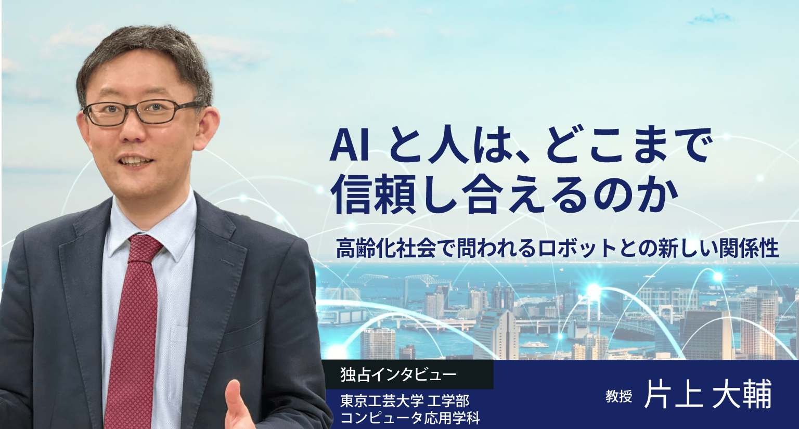
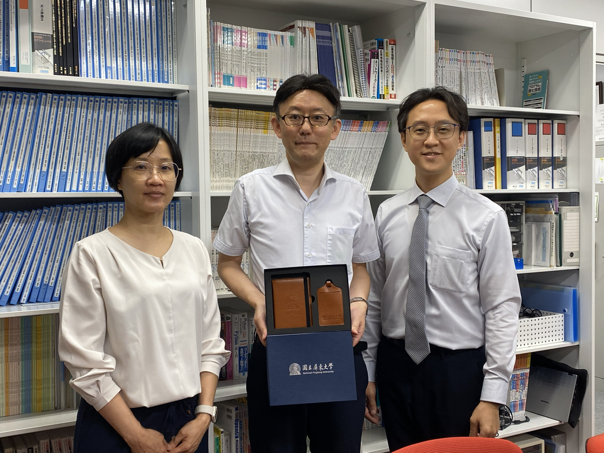


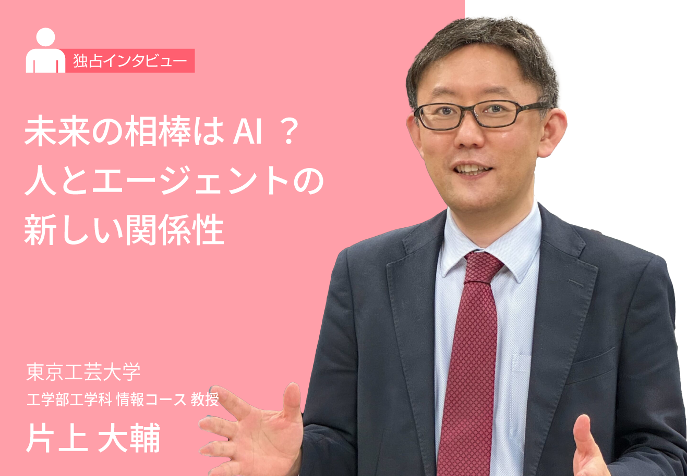
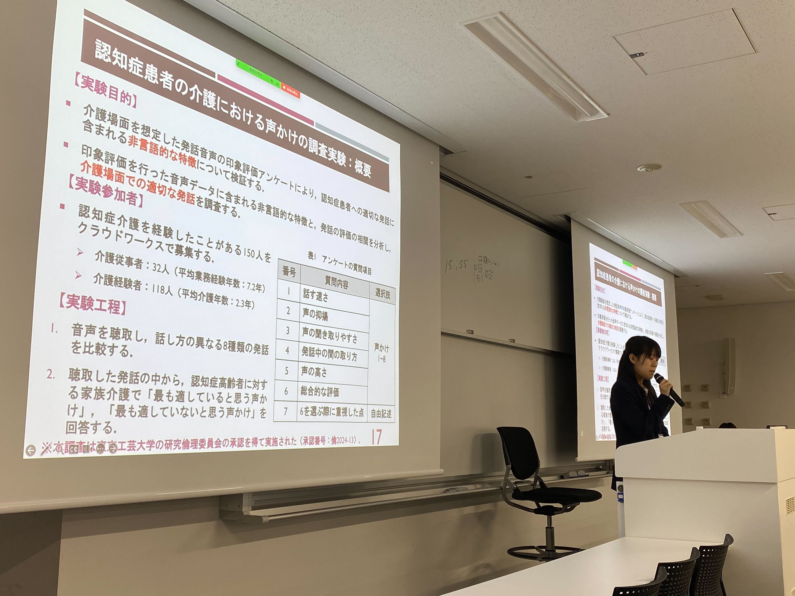
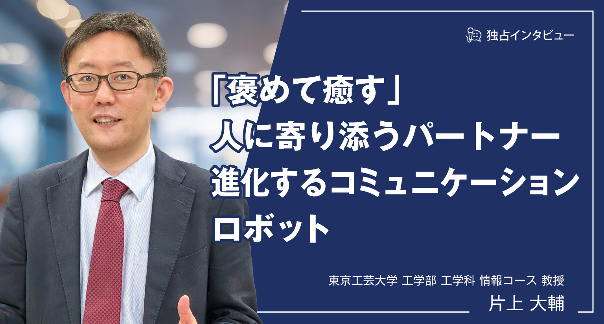
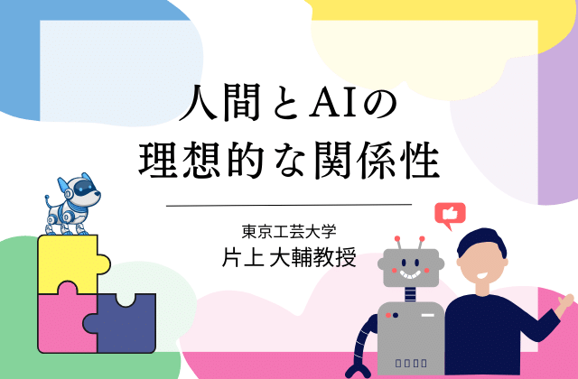
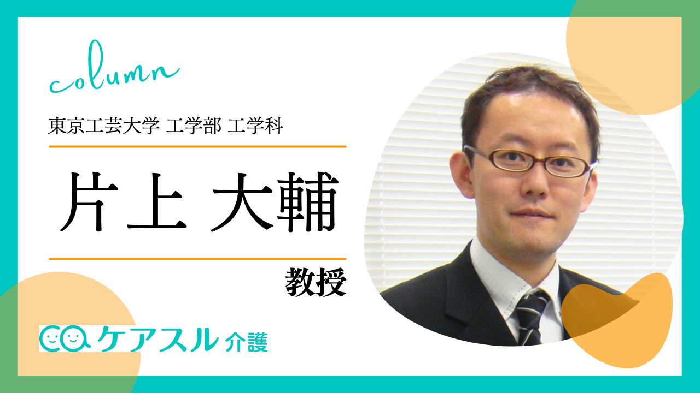
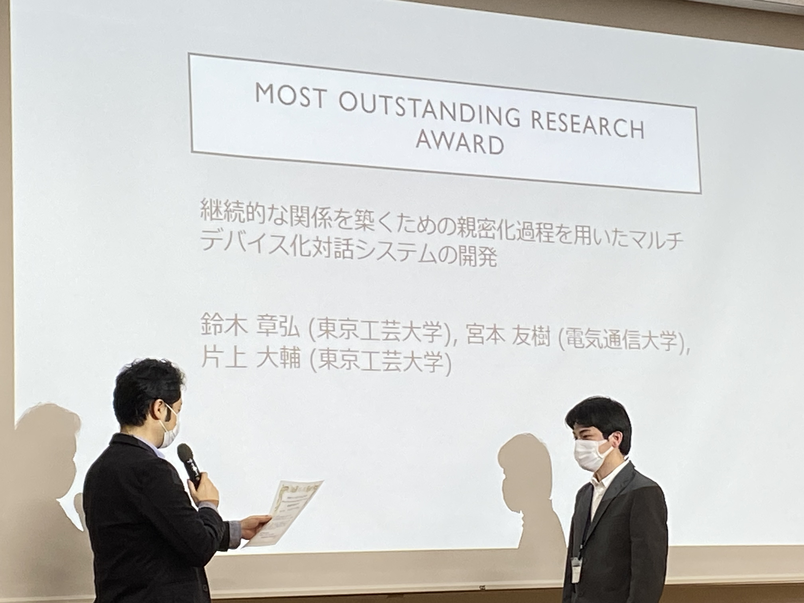
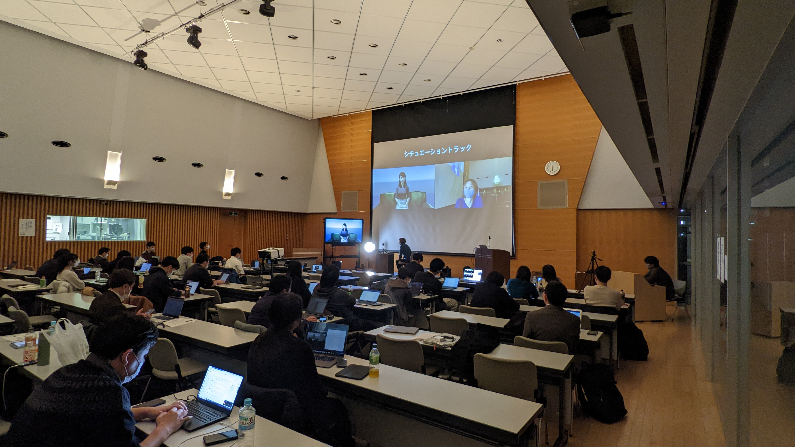
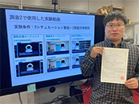
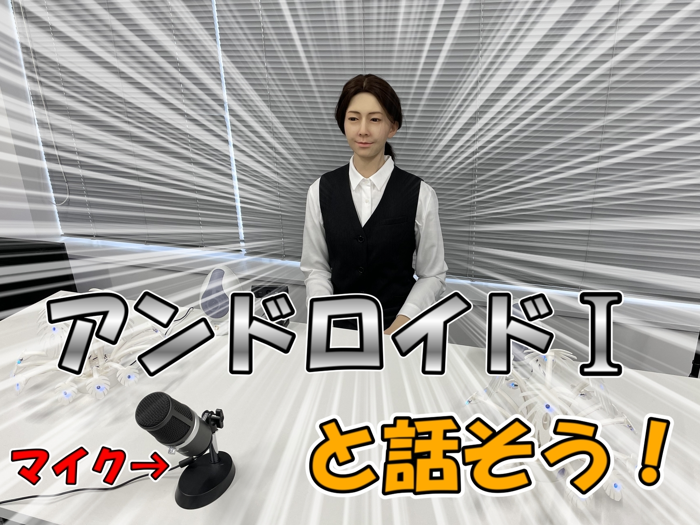
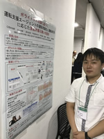
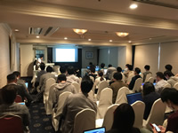
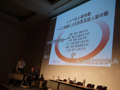
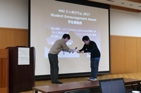
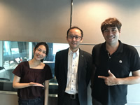
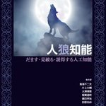
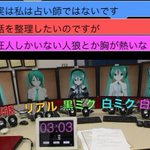